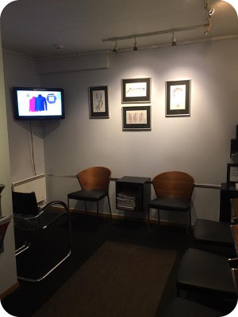

Regelmessig innkalling av pasienter for kontroll av tennene, røntgenundersøkelse og tannrens.Pasienten får opplæring i eget stell av tenner og behandlingen avsluttes med airflow (puss med vannstråle og rensepulver).

Når det er hull i en tann må det syke tannvevet fjernes og erstattes med en fylling. Det brukes i dag hovedsakelig hvite fyllinger (kompositt/plast-fyllinger)
Disse har ulike tannfarger slik at fyllingens farge blir mest mulig lik din egen tannfarge.
En hvit fylling krever godt vedlikehold fra din side. Det vil si godt renhold spesielt ved hjelp av tanntråd/tannstikker. Årsaken til dette er at bakterier samler seg lettere her og kan dermed føre til nytt hull i overgangen mellom tann og fylling.
Krone ( porselensfullkrone) Noen ganger er tannen så ødelagt av tannråte at en vanlig fylling ikke vil gjøre nytten. Da er en porselenskrone det beste og mest holdbare valget. En slik krone lages ved at tannlegen sliper ned på tannen, tar avtrykk og sender dette til tanntekniker. Det tar ca 14 dager før kronen er ferdig og kan sementeres på den tilslipte tannen. Kronen er laget slik at form og farge er mest mulig lik dine egne tenner og dermed er det nærmest umulig å se forskjell.
Prismessig er en krone noe dyrere enn en stor fylling (som vil være alternativet) men i lengden vil dette lønne seg da holdbarheten er totalt overlegen.
Bro Manglende tann kan erstattes ved å lage en tannbro. Da må den kunstige tannen festes på nabotennene. Disse må da slipes til . Det taes avtrykk og sendes til tannteknikker som fremstiller broen. Broen sementeres på plass med sement. Dersom nabotennene skulle være i perfekt stand er det synd å slipe på disse, da er et implantat det absolutt beste valget ( se: Implantater )
Fasetter Fasetter er tynne porselens-skall som limes på tannen. Det kreves minimalt med sliping og brukes hovedsakelig på fortennene. Indikasjonene kan være ødelagt emalje pga syreangrep eller medfødte misfarginger som ikke lar seg bleke. Fasetter er en enkel måte å få penere tenner på når indikasjoner foreligger.
Implantater er tannrotformede titanskruer som skrus inn i kjevebenet. På disse implantatene festes porselenstenner og broer.
Selv om det utføres kirurgi og krone-broarbeide,er det i dag en rutinemessig grei behandling. Man må også være forberedt på at denne behandlingen tar noe tid. Implantatene må gro fast i kjeven før porselenstenner/broer settes på. (ca 4-6 måneder)
I spesielle tilfeller stiller trygden opp med en del ytelser.
Dersom et hull(karies) får stå ubehandlet vil kariesangrepet til slutt nå tann-nerven. Denne vil da bli infisert av bakterier og en betennelse i tannroten oppstår. Resultatet er tannverk. Behandlingen er da å fjerne de/den infiserte nerven/nervene, legge inn et bakteriedrepende stoff i roten/røttene. N år betennelsen er borte fylles roten/røttene igjen. Deretter legges en fylling på toppen.
En rotbehandling er tidkrevende og det tar 2 til 3 besøk før tanna er ferdig rotfylt. Selve behandlingen er vanligvis helt smertefri, men noen kan få en liten oppblussing av betennelsen, spesielt etter første behandling.
Operasjon på rotspiss: Hvis en tidligere rotfylt tann får ny infeksjon på rotspissen, kan tanna bli frisk med en operasjon. Spesialist i rotbehandling vil da kappe av en liten del av rota og rense ut betendt vev rundt rotspissen. Operasjonen utføres i lokalanestesi og kan gi litt hevelse første dag etter behandling. Folketrygden har gode refusjonsordninger for rotspissoperasjoner
Gnissing av tenner kan gi kjeveleddsproblemer og hodepine,samtidig som det blir unødvendig mye slitasje på tennene. Behandlingen består i å få laget en bittskinne som du ligger med om natten. Samtidig kan du prøve med avspenningsøvelser.
Folketrygden har gode refusjonsordninger for bittskinne.
Et hvitt smil er alltid pent og tannbleking er blitt mer og mer vanlig. Bleking av tenner er helt ufarlig så lenge det gjøres riktig og med riktig produkt.
Hjemmebleking: Tannlegen tar da et avtrykk av tennene dine og sender dette til tanntekniker. Tanntekniker lager en blekeskinne nøyaktig tilpasset tennene dine. Du får utlevert en blekegele som du selv sprøyter oppi blekeskinnen ,og velger selv om du vil bleke på dagen eller natten. Med denne metoden kan du velge selv når og hvor ofte du ønsker å bleke tennene dine.
Gingivitt er betennelse/irritasjon i tannkjøttet som følge av for dårlig tannhygiene. Tannkjøttet er da rødlig/hovent og blør lett Dersom dette ikke blir behandlet og får stå lenge nok kan gingivitt utvikle seg til periodontitt. Tannfestet brytes da sakte men sikkert ned og til slutt kan tannen løsne. Denne prosessen skjer over lang tid og mye kan gjøres underveis. Forebyggende tiltak er hjelp til å få bedre tannhygiene ( riktig pusseteknikk, tanntråd/tannstikker) Dersom prosessen er kommet for langt kreves en grundigere rens av tannstein.
Det finnes i dag gode refusjonsordninger fra trygdekontoret for de av oss som har fått sykdommen periodontitt.
Proteser(gebiss/helprotese): Proteser lages dersom du ikke har flere tenner igjen. En protese er en plate av acryl (en type plastmateriale) med tenner festet oppå. Den erstatter alle tennene dine, og lages selvfølgelig så naturtro som mulig.
Partielle proteser: Det er ikke alltid manglende tenner kan erstattes med en tannbro, noen ganger kan spennet bli for stort. Da lages det heller en partiell protese.
Det er også en plate av acryl med tenner , men i motsetning til helprotesen (gebisset) har denne små bøyler som skal festes til dine egne tenner. En partiell protese sitter dermed bedre fast i munnen enn en helprotese.
Fremgangsmåte: tannlegen tar et avtrykk av kjeven din og sender dette til tanntekniker. Det lages en gipsmodell nøyaktig lik din egen kjeve. Tanntekniker modellerer protesen i voks og fester tenner på denne. Protesen må tilpasses i munnen før den støpes. Den ferdige protesen må finjusteres i munnen etterpå.
Det er veldig viktig med godt renhold av både helprotesen og den partielle protesen hver dag.
Det er ikke alltid plass til visdomstennene våre. Det kan føre til betennelser i kjeven og tannkjøtt. Dersom tannen ligger nedi kjevebeinet og skaper problemer må den fjernes operativt. Man får da lokal bedøvelse slik at behandlingen blir helt smertefri
Operasjon av visdomstenner tar nok noe lengre tid enn vanlig tanntrekking, og man må regne med en del ubehag i noen dager etterpå. Da vil smertestillende hjelpe , samt å skylle med antibakterielt skyllemiddel som du får på apoteket.
Trygdekontoret dekker en del av utgiftene.
Våre tannleger er godt trent på å legge forholdene til rette slik at de av oss som lider av tannlegeskrekk skal få det så bra som mulig. Vi tar oss god tid, forklarer hva vi gjør og lar deg ha kontrollen. Husk at det er du som har kontrollen! Premedikasjon er også et alternativ, spesielt de første gangene, men målet er at du til slutt klarer å overvinne angsten uten hjelp fra medikamenter.
Som en siste utvei kan vi henvise for tannbehandling i full narkose